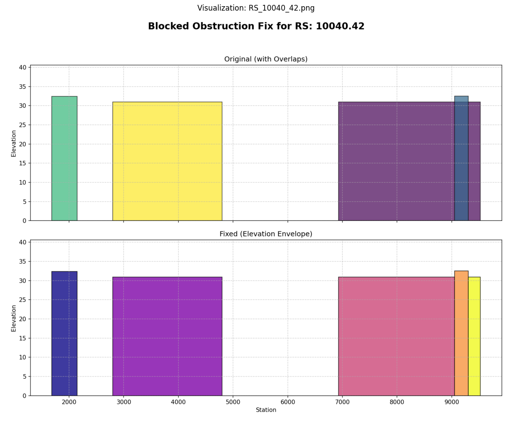

Fixing Blocked Obstruction Overlaps with RasFixit¶
This notebook demonstrates using the RasFixit module to automatically detect and repair overlapping blocked obstructions in HEC-RAS geometry files.
Example Project: HCFCD M3 Model A120-00-00 (Harris County Flood Control District)
Overview¶
Problem: HEC-RAS geometry files sometimes contain overlapping or adjacent blocked obstructions, which cause model errors during geometry preprocessing.
Solution: RasFixit.fix_blocked_obstructions() automatically:
1. Detects overlapping/adjacent obstructions
2. Applies the elevation envelope algorithm (uses max elevation in overlap zones)
3. Inserts 0.02-unit gaps to prevent adjacency errors
4. Creates before/after PNG visualizations for engineering review
5. Creates timestamped backups
Key Principle: All fixes preserve hydraulic behavior by using the maximum (most restrictive) elevation in overlap zones.
1. Setup and Imports¶
# =============================================================================
# DEVELOPMENT MODE TOGGLE
# =============================================================================
USE_LOCAL_SOURCE = True # <-- TOGGLE THIS
from pathlib import Path # Always import Path (needed throughout notebook)
if USE_LOCAL_SOURCE:
import sys
local_path = str(Path.cwd().parent)
if local_path not in sys.path:
sys.path.insert(0, local_path)
print(f"📁 LOCAL SOURCE MODE: Loading from {local_path}/ras_commander")
else:
print("📦 PIP PACKAGE MODE: Loading installed ras-commander")
# Import ras-commander
from ras_commander import RasFixit, FixResults, FixMessage, FixAction
from ras_commander.geom.GeomCrossSection import GeomCrossSection
from ras_commander.fixit import log_parser
# Additional imports for this notebook
import pandas as pd
import numpy as np
import shutil
# Verify which version loaded
import ras_commander
print(f"✓ Loaded: {ras_commander.__file__}")
📁 LOCAL SOURCE MODE: Loading from G:\GH\ras-commander/ras_commander
2026-05-08 11:26:07 - numexpr.utils - INFO - NumExpr defaulting to 8 threads.
✓ Loaded: G:\GH\ras-commander\ras_commander\__init__.py
Parameters¶
Configure these values to customize the notebook for your project.
# =============================================================================
# PARAMETERS - Edit these to customize the notebook
# =============================================================================
from pathlib import Path
# Project Configuration
#PROJECT_NAME = "Clear Creek" # Example project to extract NOT USED IN THIS NOTEBOOK
RAS_VERSION = "7.0" # HEC-RAS version (6.3, 6.5, 6.6, etc.)
# Geometry Settings
GEOM_NUMBER = "01" # Geometry file number
RIVER = "White" # River name for cross section queries
REACH = "West Fork" # Reach name
CROSS_SECTION = "10457.31" # Cross section station (RS)
# Download HCFCD M3 Model A (Clear Creek) containing A120-00-00 project
# This is a real-world project with known obstruction overlap issues
import zipfile
from ras_commander.sources.county import M3Model
# Step 1: Extract M3 Model 'A' (Clear Creek watershed)
print("Extracting M3 Model 'A' (Clear Creek)...")
m3_path = M3Model.extract_model('A')
print(f"✓ M3 Model extracted to: {m3_path}")
# Step 2: Find and extract A120-00-00 project ZIP
a120_zip = m3_path / "HEC-RAS" / "A120-00-00.zip"
a120_folder = m3_path / "HEC-RAS" / "A120-00-00"
if not a120_folder.exists():
print(f"Extracting A120-00-00 project...")
with zipfile.ZipFile(a120_zip, 'r') as zip_ref:
zip_ref.extractall(a120_folder)
print(f"✓ Project extracted to: {a120_folder}")
else:
print(f"✓ Project already exists: {a120_folder}")
# Step 3: Set paths for this notebook
project_folder = a120_folder
geom_file = project_folder / "A120_00_00.g01"
print(f"\nProject folder: {project_folder}")
print(f"Geometry file exists: {geom_file.exists()}")
2026-05-08 11:26:09 - ras_commander.sources.county.m3_model - INFO - ----- M3Model Extracting Model -----
2026-05-08 11:26:09 - ras_commander.sources.county.m3_model - INFO - Extracting model 'A' - Clear Creek
2026-05-08 11:26:09 - ras_commander.sources.county.m3_model - INFO - Model 'Clear Creek' already exists at G:\GH\ras-commander\examples\m3_models\Clear Creek
2026-05-08 11:26:09 - ras_commander.sources.county.m3_model - INFO - Use overwrite=True to re-download
Extracting M3 Model 'A' (Clear Creek)...
✓ M3 Model extracted to: G:\GH\ras-commander\examples\m3_models\Clear Creek
✓ Project already exists: G:\GH\ras-commander\examples\m3_models\Clear Creek\HEC-RAS\A120-00-00
Project folder: G:\GH\ras-commander\examples\m3_models\Clear Creek\HEC-RAS\A120-00-00
Geometry file exists: True
# Detect overlaps without modifying the file
results = RasFixit.detect_obstruction_overlaps(geom_file)
print(f"Geometry File: {geom_file.name}")
print(f"Cross Sections Checked: {results.total_xs_checked}")
print(f"Cross Sections with Overlaps: {results.total_xs_fixed}")
if results.messages:
print(f"\nAffected cross sections:")
for msg in results.messages:
print(f" RS {msg.station}: {msg.original_count} obstructions -> would become {msg.fixed_count}")
2026-05-08 11:26:09 - ras_commander.geom.GeomCrossSection - WARNING - Expected 2 blocked obstructions, parsed 1
2026-05-08 11:26:09 - ras_commander.geom.GeomCrossSection - WARNING - Expected 3 blocked obstructions, parsed 2
Geometry File: A120_00_00.g01
Cross Sections Checked: 91
Cross Sections with Overlaps: 15
Affected cross sections:
RS 20262.89: 5 obstructions -> would become 6
RS 17853.49: 2 obstructions -> would become 2
RS 17833.49: 2 obstructions -> would become 2
RS 17612.53: 3 obstructions -> would become 3
RS 15831.37: 2 obstructions -> would become 2
RS 15136.2: 7 obstructions -> would become 8
RS 14284.07: 3 obstructions -> would become 4
RS 11422.31: 3 obstructions -> would become 4
RS 11181.99: 3 obstructions -> would become 4
RS 10150.51: 4 obstructions -> would become 5
RS 10040.42: 4 obstructions -> would become 5
RS 9960.36: 3 obstructions -> would become 4
RS 5714.48: 2 obstructions -> would become 3
RS 4894.121: 2 obstructions -> would become 2
RS 4053.094: 2 obstructions -> would become 2
3. Examine the Overlapping Obstructions¶
Let's look at the detailed data for one of the affected cross sections.
# Look at first affected cross section in detail
if results.messages:
msg = results.messages[0]
print(f"=== Cross Section RS {msg.station} ===")
print(f"\nOriginal Obstructions ({msg.original_count}):")
for i, (start, end, elev) in enumerate(msg.original_data, 1):
print(f" {i}. Station {start:8.2f} to {end:8.2f}, Elevation: {elev:.2f}")
print(f"\nFixed Obstructions ({msg.fixed_count}) - using max elevation envelope:")
for i, (start, end, elev) in enumerate(msg.fixed_data, 1):
print(f" {i}. Station {start:8.2f} to {end:8.2f}, Elevation: {elev:.2f}")
=== Cross Section RS 20262.89 ===
Original Obstructions (5):
1. Station 1771.46 to 2303.49, Elevation: 37.43
2. Station 3165.57 to 4205.00, Elevation: 34.20
3. Station 4825.70 to 5057.23, Elevation: 34.30
4. Station 4850.00 to 5050.00, Elevation: 35.30
5. Station 3100.00 to 3200.00, Elevation: 35.10
Fixed Obstructions (6) - using max elevation envelope:
1. Station 1771.46 to 2303.49, Elevation: 37.43
2. Station 3100.00 to 3200.00, Elevation: 35.10
3. Station 3200.02 to 4205.00, Elevation: 34.20
4. Station 4825.70 to 4850.00, Elevation: 34.30
5. Station 4850.02 to 5050.00, Elevation: 35.30
6. Station 5050.02 to 5057.23, Elevation: 34.30
4. Fix Overlapping Obstructions¶
Now let's apply the fixes. We'll work on a copy of the geometry file to preserve the original.
This will: 1. Create a timestamped backup of the file 2. Apply the elevation envelope algorithm to resolve overlaps 3. Generate before/after PNG visualizations 4. Return detailed results for engineering review
IMPORTANT: Always review the visualizations before accepting changes!
# Create a working copy so we don't modify the original
working_copy = project_folder / "A120_00_00_test_copy.g01"
shutil.copy(geom_file, working_copy)
print(f"Created working copy: {working_copy.name}")
# Fix overlapping obstructions with visualization
fix_results = RasFixit.fix_blocked_obstructions(
working_copy,
backup=True, # Create timestamped backup
visualize=True # Generate before/after PNGs
)
print(f"\n=== Fix Results ===")
print(f"Cross Sections Checked: {fix_results.total_xs_checked}")
print(f"Cross Sections Fixed: {fix_results.total_xs_fixed}")
print(f"Backup Created: {fix_results.backup_path}")
print(f"Visualizations: {fix_results.visualization_folder}")
2026-05-08 11:26:09 - ras_commander.fixit.RasFixit - INFO - Created backup: G:\GH\ras-commander\examples\m3_models\Clear Creek\HEC-RAS\A120-00-00\A120_00_00_test_copy.g01.backup_20260508_112609
2026-05-08 11:26:09 - ras_commander.fixit.RasFixit - INFO - Saving visualizations to: G:\GH\ras-commander\examples\m3_models\Clear Creek\HEC-RAS\A120-00-00\A120_00_00_test_copy_g01_Obstructions_Fixed
Created working copy: A120_00_00_test_copy.g01
2026-05-08 11:26:09 - ras_commander.geom.GeomCrossSection - WARNING - Expected 2 blocked obstructions, parsed 1
2026-05-08 11:26:09 - ras_commander.geom.GeomCrossSection - WARNING - Expected 3 blocked obstructions, parsed 2
2026-05-08 11:26:09 - ras_commander.geom.GeomParser - INFO - Successfully wrote geometry file: G:\GH\ras-commander\examples\m3_models\Clear Creek\HEC-RAS\A120-00-00\A120_00_00_test_copy.g01
2026-05-08 11:26:09 - ras_commander.geom.GeomCrossSection - INFO - Updated blocked obstructions for A120-00-00/A120-00-00_0008/RS 20262.89: 6 obstructions written
2026-05-08 11:26:09 - ras_commander.geom.GeomParser - INFO - Successfully wrote geometry file: G:\GH\ras-commander\examples\m3_models\Clear Creek\HEC-RAS\A120-00-00\A120_00_00_test_copy.g01
2026-05-08 11:26:09 - ras_commander.geom.GeomCrossSection - INFO - Updated blocked obstructions for A120-00-00/A120-00-00_0008/RS 17853.49: 2 obstructions written
2026-05-08 11:26:10 - ras_commander.geom.GeomParser - INFO - Successfully wrote geometry file: G:\GH\ras-commander\examples\m3_models\Clear Creek\HEC-RAS\A120-00-00\A120_00_00_test_copy.g01
2026-05-08 11:26:10 - ras_commander.geom.GeomCrossSection - INFO - Updated blocked obstructions for A120-00-00/A120-00-00_0008/RS 17833.49: 2 obstructions written
2026-05-08 11:26:10 - ras_commander.geom.GeomParser - INFO - Successfully wrote geometry file: G:\GH\ras-commander\examples\m3_models\Clear Creek\HEC-RAS\A120-00-00\A120_00_00_test_copy.g01
2026-05-08 11:26:10 - ras_commander.geom.GeomCrossSection - INFO - Updated blocked obstructions for A120-00-00/A120-00-00_0008/RS 17612.53: 3 obstructions written
2026-05-08 11:26:10 - ras_commander.geom.GeomParser - INFO - Successfully wrote geometry file: G:\GH\ras-commander\examples\m3_models\Clear Creek\HEC-RAS\A120-00-00\A120_00_00_test_copy.g01
2026-05-08 11:26:10 - ras_commander.geom.GeomCrossSection - INFO - Updated blocked obstructions for A120-00-00/A120-00-00_0008/RS 15831.37: 2 obstructions written
2026-05-08 11:26:11 - ras_commander.geom.GeomParser - INFO - Successfully wrote geometry file: G:\GH\ras-commander\examples\m3_models\Clear Creek\HEC-RAS\A120-00-00\A120_00_00_test_copy.g01
2026-05-08 11:26:11 - ras_commander.geom.GeomCrossSection - INFO - Updated blocked obstructions for A120-00-00/A120-00-00_0008/RS 15136.2: 8 obstructions written
2026-05-08 11:26:11 - ras_commander.geom.GeomParser - INFO - Successfully wrote geometry file: G:\GH\ras-commander\examples\m3_models\Clear Creek\HEC-RAS\A120-00-00\A120_00_00_test_copy.g01
2026-05-08 11:26:11 - ras_commander.geom.GeomCrossSection - INFO - Updated blocked obstructions for A120-00-00/A120-00-00_0008/RS 14284.07: 4 obstructions written
2026-05-08 11:26:11 - ras_commander.geom.GeomParser - INFO - Successfully wrote geometry file: G:\GH\ras-commander\examples\m3_models\Clear Creek\HEC-RAS\A120-00-00\A120_00_00_test_copy.g01
2026-05-08 11:26:11 - ras_commander.geom.GeomCrossSection - INFO - Updated blocked obstructions for A120-00-00/A120-00-00_0008/RS 11422.31: 4 obstructions written
2026-05-08 11:26:11 - ras_commander.geom.GeomParser - INFO - Successfully wrote geometry file: G:\GH\ras-commander\examples\m3_models\Clear Creek\HEC-RAS\A120-00-00\A120_00_00_test_copy.g01
2026-05-08 11:26:11 - ras_commander.geom.GeomCrossSection - INFO - Updated blocked obstructions for A120-00-00/A120-00-00_0008/RS 11181.99: 4 obstructions written
2026-05-08 11:26:12 - ras_commander.geom.GeomParser - INFO - Successfully wrote geometry file: G:\GH\ras-commander\examples\m3_models\Clear Creek\HEC-RAS\A120-00-00\A120_00_00_test_copy.g01
2026-05-08 11:26:12 - ras_commander.geom.GeomCrossSection - INFO - Updated blocked obstructions for A120-00-00/A120-00-00_0008/RS 10150.51: 5 obstructions written
2026-05-08 11:26:12 - ras_commander.geom.GeomParser - INFO - Successfully wrote geometry file: G:\GH\ras-commander\examples\m3_models\Clear Creek\HEC-RAS\A120-00-00\A120_00_00_test_copy.g01
2026-05-08 11:26:12 - ras_commander.geom.GeomCrossSection - INFO - Updated blocked obstructions for A120-00-00/A120-00-00_0008/RS 10040.42: 5 obstructions written
2026-05-08 11:26:12 - ras_commander.geom.GeomParser - INFO - Successfully wrote geometry file: G:\GH\ras-commander\examples\m3_models\Clear Creek\HEC-RAS\A120-00-00\A120_00_00_test_copy.g01
2026-05-08 11:26:12 - ras_commander.geom.GeomCrossSection - INFO - Updated blocked obstructions for A120-00-00/A120-00-00_0008/RS 9960.36: 4 obstructions written
2026-05-08 11:26:13 - ras_commander.geom.GeomParser - INFO - Successfully wrote geometry file: G:\GH\ras-commander\examples\m3_models\Clear Creek\HEC-RAS\A120-00-00\A120_00_00_test_copy.g01
2026-05-08 11:26:13 - ras_commander.geom.GeomCrossSection - INFO - Updated blocked obstructions for A120-00-00/A120-00-00_0008/RS 5714.48: 3 obstructions written
2026-05-08 11:26:13 - ras_commander.geom.GeomParser - INFO - Successfully wrote geometry file: G:\GH\ras-commander\examples\m3_models\Clear Creek\HEC-RAS\A120-00-00\A120_00_00_test_copy.g01
2026-05-08 11:26:13 - ras_commander.geom.GeomCrossSection - INFO - Updated blocked obstructions for A120-00-00/A120-00-00_0008/RS 4894.121: 2 obstructions written
2026-05-08 11:26:13 - ras_commander.geom.GeomParser - INFO - Successfully wrote geometry file: G:\GH\ras-commander\examples\m3_models\Clear Creek\HEC-RAS\A120-00-00\A120_00_00_test_copy.g01
2026-05-08 11:26:13 - ras_commander.geom.GeomCrossSection - INFO - Updated blocked obstructions for A120-00-00/A120-00-00_0008/RS 4053.094: 2 obstructions written
2026-05-08 11:26:13 - ras_commander.fixit.RasFixit - INFO - Fixed 15 cross sections in A120_00_00_test_copy.g01
=== Fix Results ===
Cross Sections Checked: 91
Cross Sections Fixed: 15
Backup Created: G:\GH\ras-commander\examples\m3_models\Clear Creek\HEC-RAS\A120-00-00\A120_00_00_test_copy.g01.backup_20260508_112609
Visualizations: G:\GH\ras-commander\examples\m3_models\Clear Creek\HEC-RAS\A120-00-00\A120_00_00_test_copy_g01_Obstructions_Fixed
5. Review Fix Results¶
The FixResults object contains detailed information about every fix applied. Let's examine it.
# Convert results to DataFrame for easy analysis
df = fix_results.to_dataframe()
print(f"Fix Summary DataFrame ({len(df)} rows):")
print(df[['station', 'action', 'original_count', 'fixed_count', 'message']].to_string())
Fix Summary DataFrame (15 rows):
station action original_count fixed_count message
0 20262.89 OVERLAP_RESOLVED 5 6 Resolved 5 overlapping obstructions to 6 non-overlapping
1 17853.49 OVERLAP_RESOLVED 2 2 Resolved 2 overlapping obstructions to 2 non-overlapping
2 17833.49 OVERLAP_RESOLVED 2 2 Resolved 2 overlapping obstructions to 2 non-overlapping
3 17612.53 OVERLAP_RESOLVED 3 3 Resolved 3 overlapping obstructions to 3 non-overlapping
4 15831.37 OVERLAP_RESOLVED 2 2 Resolved 2 overlapping obstructions to 2 non-overlapping
5 15136.2 OVERLAP_RESOLVED 7 8 Resolved 7 overlapping obstructions to 8 non-overlapping
6 14284.07 OVERLAP_RESOLVED 3 4 Resolved 3 overlapping obstructions to 4 non-overlapping
7 11422.31 OVERLAP_RESOLVED 3 4 Resolved 3 overlapping obstructions to 4 non-overlapping
8 11181.99 OVERLAP_RESOLVED 3 4 Resolved 3 overlapping obstructions to 4 non-overlapping
9 10150.51 OVERLAP_RESOLVED 4 5 Resolved 4 overlapping obstructions to 5 non-overlapping
10 10040.42 OVERLAP_RESOLVED 4 5 Resolved 4 overlapping obstructions to 5 non-overlapping
11 9960.36 OVERLAP_RESOLVED 3 4 Resolved 3 overlapping obstructions to 4 non-overlapping
12 5714.48 OVERLAP_RESOLVED 2 3 Resolved 2 overlapping obstructions to 3 non-overlapping
13 4894.121 OVERLAP_RESOLVED 2 2 Resolved 2 overlapping obstructions to 2 non-overlapping
14 4053.094 OVERLAP_RESOLVED 2 2 Resolved 2 overlapping obstructions to 2 non-overlapping
# Export to CSV for documentation
csv_path = project_folder / "obstruction_fix_report.csv"
df.to_csv(csv_path, index=False)
print(f"Fix report exported to: {csv_path}")
Fix report exported to: G:\GH\ras-commander\examples\m3_models\Clear Creek\HEC-RAS\A120-00-00\obstruction_fix_report.csv
6. View Visualizations¶
The PNG visualizations show before/after comparisons for each fixed cross section. They are critical for engineering review.
# Display a visualization (requires matplotlib)
import matplotlib.pyplot as plt
from matplotlib.image import imread
if fix_results.visualization_folder and fix_results.visualization_folder.exists():
png_files = sorted(fix_results.visualization_folder.glob("*.png"))
if png_files:
# Display first visualization
img = imread(png_files[0])
plt.figure(figsize=(14, 10))
plt.imshow(img)
plt.axis('off')
plt.title(f"Visualization: {png_files[0].name}")
plt.tight_layout()
plt.show()
print(f"\nTotal visualizations generated: {len(png_files)}")
print(f"Location: {fix_results.visualization_folder}")
else:
print("No PNG files found in visualization folder.")
else:
print("No visualization folder available.")

Total visualizations generated: 15
Location: G:\GH\ras-commander\examples\m3_models\Clear Creek\HEC-RAS\A120-00-00\A120_00_00_test_copy_g01_Obstructions_Fixed
# Display all visualizations (optional - may be slow for many cross sections)
show_all = False # Set to True to view all
if show_all and fix_results.visualization_folder:
png_files = sorted(fix_results.visualization_folder.glob("*.png"))
for png_file in png_files:
img = imread(png_file)
plt.figure(figsize=(14, 10))
plt.imshow(img)
plt.axis('off')
plt.title(png_file.name)
plt.tight_layout()
plt.show()
7. Verify Fixes¶
After fixing, verify that no overlaps remain.
# Verify no overlaps remain after fix
verify_results = RasFixit.detect_obstruction_overlaps(working_copy)
if verify_results.total_xs_fixed == 0:
print("SUCCESS: No overlapping obstructions remaining!")
print(f"Verified {verify_results.total_xs_checked} cross sections.")
else:
print(f"WARNING: {verify_results.total_xs_fixed} cross sections still have overlaps.")
print("Please review the file manually.")
2026-05-08 11:26:14 - ras_commander.geom.GeomCrossSection - WARNING - Expected 2 blocked obstructions, parsed 1
2026-05-08 11:26:14 - ras_commander.geom.GeomCrossSection - WARNING - Expected 3 blocked obstructions, parsed 2
SUCCESS: No overlapping obstructions remaining!
Verified 91 cross sections.
8. Log Parsing for Automated Workflows¶
The log_parser module can detect obstruction errors from HEC-RAS compute logs, enabling automated fix workflows.
# Example: Parse HEC-RAS log for obstruction errors
sample_log = """
HEC-RAS Model Computation
Processing cross section 20262.89
ERROR: Cross Section 20262.89 has overlapping blocked obstructions
Processing cross section 18765.43
ERROR: Blocked obstructions at station 18765.43 overlap or are adjacent
Computation complete with errors.
"""
# Detect errors
errors = log_parser.detect_obstruction_errors(sample_log)
print(f"Detected {len(errors)} obstruction errors")
# Extract affected stations
stations = log_parser.extract_cross_section_ids(sample_log)
print(f"Affected stations: {stations}")
# Generate human-readable report
print("\n" + log_parser.generate_error_report(errors))
Detected 2 obstruction errors
Affected stations: ['18765.43', '20262.89']
================================================================================
BLOCKED OBSTRUCTION ERROR REPORT
================================================================================
Total Errors Found: 2
OVERLAP (1 occurrences):
--------------------------------------------------------------------------------
River Station: 20262.89
Line: 4
Message: ERROR: Cross Section 20262.89 has overlapping blocked obstructions
ADJACENT (1 occurrences):
--------------------------------------------------------------------------------
River Station: 18765.43
Line: 6
Message: ERROR: Blocked obstructions at station 18765.43 overlap or are adjacent
================================================================================
# Automated workflow: Detect errors from log, then fix geometry files
def auto_fix_workflow(log_file_path, project_dir):
"""Automated workflow to detect and fix obstruction errors."""
# Step 1: Check log for errors
if not log_parser.has_obstruction_errors(log_file_path):
print("No obstruction errors found in log.")
return None
# Step 2: Read log and detect errors
with open(log_file_path, 'r') as f:
log_content = f.read()
errors = log_parser.detect_obstruction_errors(log_content)
print(f"Found {len(errors)} obstruction errors")
# Step 3: Find geometry files in project
geom_files = log_parser.find_geometry_files_in_directory(project_dir)
print(f"Found {len(geom_files)} geometry files")
# Step 4: Fix each geometry file
all_results = {}
for geom_path in geom_files:
results = RasFixit.fix_blocked_obstructions(
geom_path,
backup=True,
visualize=True
)
all_results[geom_path] = results
print(f" Fixed {results.total_xs_fixed} cross sections in {Path(geom_path).name}")
return all_results
print("auto_fix_workflow() function defined.")
print("Usage: auto_fix_workflow('compute.log', 'path/to/project')")
auto_fix_workflow() function defined.
Usage: auto_fix_workflow('compute.log', 'path/to/project')
9. GeomCrossSection Blocked Obstruction API¶
The GeomCrossSection class exposes low-level read/write methods for blocked obstructions, independent of the RasFixit repair workflow. Use these when you need to:
- Inspect obstruction data across all cross sections as a DataFrame
- Programmatically write new or modified obstructions to a
.g##file - Cross-validate text-parsed obstructions against HDF geometry flags
These methods follow ras-commander API conventions: @staticmethod, @log_call, and accept either a geometry number with ras_object or a direct file path.
9a. Read Blocked Obstructions as a DataFrame¶
get_blocked_obstructions() returns a DataFrame with xs_id, River, Reach, RS, obstruction_index, start_sta, end_sta, and elevation columns. Pass no xs_id to read all cross sections, or pass a specific identifier to filter.
# Read all blocked obstructions from the original geometry file
all_obs = GeomCrossSection.get_blocked_obstructions(geom_file)
print(f"Total obstructions across all cross sections: {len(all_obs)}")
print(f"Cross sections with obstructions: {all_obs['xs_id'].nunique()}")
print(f"\nColumns: {list(all_obs.columns)}")
print(f"\nFirst 10 rows:")
all_obs.head(10)
2026-05-08 11:26:14 - ras_commander.geom.GeomCrossSection - WARNING - Expected 2 blocked obstructions, parsed 1
2026-05-08 11:26:14 - ras_commander.geom.GeomCrossSection - WARNING - Expected 3 blocked obstructions, parsed 2
Total obstructions across all cross sections: 178
Cross sections with obstructions: 72
Columns: ['xs_id', 'River', 'Reach', 'RS', 'obstruction_index', 'start_sta', 'end_sta', 'elevation']
First 10 rows:
| xs_id | River | Reach | RS | obstruction_index | start_sta | end_sta | elevation | |
|---|---|---|---|---|---|---|---|---|
| 0 | A120-00-00|A120-00-00_0008|29113.3 | A120-00-00 | A120-00-00_0008 | 29113.3 | 0 | 5240.00 | 5875.00 | 40.5 |
| 1 | A120-00-00|A120-00-00_0008|28913.21 | A120-00-00 | A120-00-00_0008 | 28913.21 | 0 | 5193.17 | 5481.91 | 41.0 |
| 2 | A120-00-00|A120-00-00_0008|28022.89 | A120-00-00 | A120-00-00_0008 | 28022.89 | 0 | 3200.00 | 3400.00 | 41.0 |
| 3 | A120-00-00|A120-00-00_0008|28022.89 | A120-00-00 | A120-00-00_0008 | 28022.89 | 1 | 3571.00 | 4500.00 | 39.6 |
| 4 | A120-00-00|A120-00-00_0008|28022.89 | A120-00-00 | A120-00-00_0008 | 28022.89 | 2 | 5200.00 | 5900.00 | 41.0 |
| 5 | A120-00-00|A120-00-00_0008|27857.47 | A120-00-00 | A120-00-00_0008 | 27857.47 | 0 | 2900.00 | 3150.00 | 41.0 |
| 6 | A120-00-00|A120-00-00_0008|27857.47 | A120-00-00 | A120-00-00_0008 | 27857.47 | 1 | 3151.00 | 4300.00 | 39.5 |
| 7 | A120-00-00|A120-00-00_0008|26578.6 | A120-00-00 | A120-00-00_0008 | 26578.6 | 0 | -500.00 | -180.00 | 41.0 |
| 8 | A120-00-00|A120-00-00_0008|26578.6 | A120-00-00 | A120-00-00_0008 | 26578.6 | 1 | -150.00 | 2300.00 | 39.4 |
| 9 | A120-00-00|A120-00-00_0008|25646.24 | A120-00-00 | A120-00-00_0008 | 25646.24 | 0 | -350.00 | 0.00 | 40.5 |
# Read obstructions for a single cross section using xs_id
target_xs = all_obs["xs_id"].iloc[0]
single_xs_obs = GeomCrossSection.get_blocked_obstructions(geom_file, xs_id=target_xs)
print(f"Obstructions for {target_xs}:")
for _, row in single_xs_obs.iterrows():
print(f" [{row['obstruction_index']}] Station {row['start_sta']:8.2f} to {row['end_sta']:8.2f}, Elevation: {row['elevation']:.2f}")
# Summary statistics
print(f"\nSummary across all cross sections:")
summary = all_obs.groupby("xs_id").agg(
count=("obstruction_index", "count"),
min_sta=("start_sta", "min"),
max_sta=("end_sta", "max"),
min_elev=("elevation", "min"),
max_elev=("elevation", "max"),
).reset_index()
summary
Obstructions for A120-00-00|A120-00-00_0008|29113.3:
[0] Station 5240.00 to 5875.00, Elevation: 40.50
Summary across all cross sections:
| xs_id | count | min_sta | max_sta | min_elev | max_elev | |
|---|---|---|---|---|---|---|
| 0 | A120-00-00|A120-00-00_0008|10040.42 | 4 | 1685.00 | 9522.18 | 30.95 | 32.50 |
| 1 | A120-00-00|A120-00-00_0008|10150.51 | 4 | 898.75 | 9450.97 | 31.00 | 32.67 |
| 2 | A120-00-00|A120-00-00_0008|10170.53 | 4 | 1205.92 | 9350.00 | 31.00 | 32.99 |
| 3 | A120-00-00|A120-00-00_0008|11181.99 | 3 | 1200.00 | 11118.41 | 31.25 | 32.70 |
| 4 | A120-00-00|A120-00-00_0008|11422.31 | 3 | 1200.00 | 11836.18 | 31.35 | 33.10 |
| ... | ... | ... | ... | ... | ... | ... |
| 67 | A120-00-00|A120-00-00_0008|9291.765 | 2 | 2650.00 | 8000.00 | 30.65 | 30.65 |
| 68 | A120-00-00|A120-00-00_0008|9331.771 | 3 | 2350.00 | 8700.00 | 30.70 | 30.70 |
| 69 | A120-00-00|A120-00-00_0008|9392.3 | 4 | 2450.00 | 9608.65 | 30.80 | 32.67 |
| 70 | A120-00-00|A120-00-00_0008|9402.438 | 5 | 2500.00 | 9900.00 | 30.80 | 32.85 |
| 71 | A120-00-00|A120-00-00_0008|9960.36 | 3 | 1730.00 | 9397.04 | 30.90 | 32.70 |
72 rows × 6 columns
9b. Write Blocked Obstructions (Round-Trip)¶
set_blocked_obstructions() writes obstruction data to a specific cross section. It accepts BlockedObstruction objects, DataFrames, dicts, or (start_sta, end_sta, elevation) tuples. A backup is created by default.
Here we demonstrate a read-modify-write round trip: read the original obstructions, shift elevations up by 1 foot, write them back, and verify the round trip.
# Create a fresh working copy for the write demo
write_demo_copy = project_folder / "A120_00_00_write_demo.g01"
shutil.copy(geom_file, write_demo_copy)
# Read original obstructions for a specific cross section
target_xs = all_obs["xs_id"].iloc[0]
original = GeomCrossSection.get_blocked_obstructions(write_demo_copy, xs_id=target_xs)
print(f"Original obstructions for {target_xs}:")
print(original[["start_sta", "end_sta", "elevation"]].to_string(index=False))
# Modify: shift all elevations up by 1 foot
modified = original[["start_sta", "end_sta", "elevation"]].copy()
modified["elevation"] = modified["elevation"] + 1.0
print(f"\nModified obstructions (elevation + 1.0 ft):")
print(modified.to_string(index=False))
# Write the modified obstructions back
backup_path = GeomCrossSection.set_blocked_obstructions(
write_demo_copy,
xs_id=target_xs,
obstructions=modified,
)
print(f"\nBackup created: {backup_path.name}")
Original obstructions for A120-00-00|A120-00-00_0008|29113.3:
2026-05-08 11:26:14 - ras_commander.geom.GeomParser - INFO - Created backup: G:\GH\ras-commander\examples\m3_models\Clear Creek\HEC-RAS\A120-00-00\A120_00_00_write_demo.g01.bak
start_sta end_sta elevation
5240.0 5875.0 40.5
Modified obstructions (elevation + 1.0 ft):
start_sta end_sta elevation
5240.0 5875.0 41.5
2026-05-08 11:26:14 - ras_commander.geom.GeomParser - INFO - Successfully wrote geometry file: G:\GH\ras-commander\examples\m3_models\Clear Creek\HEC-RAS\A120-00-00\A120_00_00_write_demo.g01
2026-05-08 11:26:14 - ras_commander.geom.GeomCrossSection - INFO - Updated blocked obstructions for A120-00-00/A120-00-00_0008/RS 29113.3: 1 obstructions written
Backup created: A120_00_00_write_demo.g01.bak
# Verify the round trip: re-read and compare
roundtrip = GeomCrossSection.get_blocked_obstructions(write_demo_copy, xs_id=target_xs)
print("Round-trip verification:")
print(roundtrip[["start_sta", "end_sta", "elevation"]].to_string(index=False))
# Check values match
assert np.allclose(roundtrip["start_sta"].values, modified["start_sta"].values), "start_sta mismatch"
assert np.allclose(roundtrip["end_sta"].values, modified["end_sta"].values), "end_sta mismatch"
assert np.allclose(roundtrip["elevation"].values, modified["elevation"].values), "elevation mismatch"
print(f"\n✓ Round trip verified: {len(roundtrip)} obstructions match")
# Verify other cross sections were not affected
all_obs_after = GeomCrossSection.get_blocked_obstructions(write_demo_copy)
other_xs_before = all_obs[all_obs["xs_id"] != target_xs]
other_xs_after = all_obs_after[all_obs_after["xs_id"] != target_xs]
assert len(other_xs_before) == len(other_xs_after), "Other XS obstruction count changed!"
assert np.allclose(
other_xs_before["elevation"].values,
other_xs_after["elevation"].values,
), "Other XS elevations changed!"
print(f"✓ Other cross sections unaffected ({len(other_xs_after)} obstructions unchanged)")
2026-05-08 11:26:14 - ras_commander.geom.GeomCrossSection - WARNING - Expected 2 blocked obstructions, parsed 1
2026-05-08 11:26:14 - ras_commander.geom.GeomCrossSection - WARNING - Expected 3 blocked obstructions, parsed 2
Round-trip verification:
start_sta end_sta elevation
5240.0 5875.0 41.5
✓ Round trip verified: 1 obstructions match
✓ Other cross sections unaffected (177 obstructions unchanged)
9c. Insert New Obstructions and Remove Existing Ones¶
set_blocked_obstructions() can also insert a new obstruction block into a cross section that has none, or remove all obstructions by passing an empty list.
# Find a cross section that has NO obstructions
xs_df = GeomCrossSection.get_cross_sections(write_demo_copy)
xs_with_obs = set(all_obs["xs_id"].unique())
all_xs_ids = [
GeomCrossSection._make_xs_id(row["River"], row["Reach"], row["RS"])
for _, row in xs_df.iterrows()
]
xs_without_obs = [xid for xid in all_xs_ids if xid not in xs_with_obs]
if xs_without_obs:
insert_target = xs_without_obs[0]
print(f"Cross section with no obstructions: {insert_target}")
# Insert new obstructions using tuples
new_obs = [
(100.0, 200.0, 50.0),
(300.0, 400.0, 55.0),
]
GeomCrossSection.set_blocked_obstructions(
write_demo_copy, xs_id=insert_target, obstructions=new_obs, create_backup=False,
)
# Verify insertion
inserted = GeomCrossSection.get_blocked_obstructions(write_demo_copy, xs_id=insert_target)
print(f"Inserted {len(inserted)} obstructions:")
print(inserted[["start_sta", "end_sta", "elevation"]].to_string(index=False))
# Now remove them by passing an empty list
GeomCrossSection.set_blocked_obstructions(
write_demo_copy, xs_id=insert_target, obstructions=[], create_backup=False,
)
removed = GeomCrossSection.get_blocked_obstructions(write_demo_copy, xs_id=insert_target)
print(f"\nAfter removal: {len(removed)} obstructions (block deleted from file)")
else:
print("All cross sections have obstructions in this geometry.")
2026-05-08 11:26:14 - ras_commander.geom.GeomParser - INFO - Successfully wrote geometry file: G:\GH\ras-commander\examples\m3_models\Clear Creek\HEC-RAS\A120-00-00\A120_00_00_write_demo.g01
2026-05-08 11:26:14 - ras_commander.geom.GeomCrossSection - INFO - Updated blocked obstructions for A120-00-00/A120-00-00_0008/RS 25548: 2 obstructions written
2026-05-08 11:26:14 - ras_commander.geom.GeomParser - INFO - Successfully wrote geometry file: G:\GH\ras-commander\examples\m3_models\Clear Creek\HEC-RAS\A120-00-00\A120_00_00_write_demo.g01
2026-05-08 11:26:14 - ras_commander.geom.GeomCrossSection - INFO - Updated blocked obstructions for A120-00-00/A120-00-00_0008/RS 25548: 0 obstructions written
Cross section with no obstructions: A120-00-00|A120-00-00_0008|25548
Inserted 2 obstructions:
start_sta end_sta elevation
100.0 200.0 50.0
300.0 400.0 55.0
After removal: 0 obstructions (block deleted from file)
9d. HDF Cross-Validation¶
validate_blocked_obstructions_hdf() compares text-parsed #Block Obstruct= presence against the HDF geometry's Obstr Block Mode flag per cross section. This catches text/HDF drift after manual edits.
Note: This requires a preprocessed .g##.hdf file alongside the text geometry. The M3 model used in this notebook does not include a preprocessed HDF, so we show the API signature below.
# HDF cross-validation (requires preprocessed .g##.hdf file)
hdf_file = Path(str(geom_file) + ".hdf")
if hdf_file.exists():
validation = GeomCrossSection.validate_blocked_obstructions_hdf(geom_file)
mismatches = validation[~validation["matches_hdf"]]
print(f"Validated {len(validation)} cross sections against HDF")
print(f"Mismatches: {len(mismatches)}")
if len(mismatches) > 0:
print(mismatches[["xs_id", "text_obstruction_count", "hdf_obstr_block_mode", "matches_hdf"]])
else:
print("All text/HDF obstruction flags agree.")
else:
print(f"No HDF file found at {hdf_file.name}")
print("To use HDF validation, preprocess the geometry in HEC-RAS first.")
print()
print("Usage:")
print(" validation = GeomCrossSection.validate_blocked_obstructions_hdf(geom_file)")
print(" validation = GeomCrossSection.validate_blocked_obstructions_hdf(geom_file, hdf_path='custom.hdf')")
print()
print("Returns a DataFrame with columns:")
print(" xs_id, River, Reach, RS, text_obstruction_count,")
print(" text_has_blocked_obstructions, hdf_obstr_block_mode,")
print(" hdf_has_blocked_obstructions, matches_hdf")
No HDF file found at A120_00_00.g01.hdf
To use HDF validation, preprocess the geometry in HEC-RAS first.
Usage:
validation = GeomCrossSection.validate_blocked_obstructions_hdf(geom_file)
validation = GeomCrossSection.validate_blocked_obstructions_hdf(geom_file, hdf_path='custom.hdf')
Returns a DataFrame with columns:
xs_id, River, Reach, RS, text_obstruction_count,
text_has_blocked_obstructions, hdf_obstr_block_mode,
hdf_has_blocked_obstructions, matches_hdf
10. Cleanup (Optional)¶
Remove test files after verification.
# Optional: Clean up test files
cleanup = True # Set to False to keep test files
if cleanup:
# Remove working copy
if working_copy.exists():
working_copy.unlink()
print(f"Removed: {working_copy.name}")
# Remove backup
if fix_results.backup_path and fix_results.backup_path.exists():
fix_results.backup_path.unlink()
print(f"Removed backup: {fix_results.backup_path.name}")
# Remove visualization folder
if fix_results.visualization_folder and fix_results.visualization_folder.exists():
shutil.rmtree(fix_results.visualization_folder)
print(f"Removed visualization folder: {fix_results.visualization_folder.name}")
# Remove CSV report
if csv_path.exists():
csv_path.unlink()
print(f"Removed: {csv_path.name}")
# Remove write demo copy and its backup
if write_demo_copy.exists():
write_demo_copy.unlink()
print(f"Removed: {write_demo_copy.name}")
for bak in project_folder.glob("A120_00_00_write_demo.g01.bak*"):
bak.unlink()
print(f"Removed backup: {bak.name}")
print("\nCleanup complete!")
else:
print("Cleanup skipped. Set cleanup=True to remove test files.")
Removed: A120_00_00_test_copy.g01
Removed backup: A120_00_00_test_copy.g01.backup_20260508_112609
Removed visualization folder: A120_00_00_test_copy_g01_Obstructions_Fixed
Removed: obstruction_fix_report.csv
Removed: A120_00_00_write_demo.g01
Removed backup: A120_00_00_write_demo.g01.bak
Cleanup complete!
Summary¶
This notebook demonstrated:
Detection & Repair (RasFixit):
- RasFixit.detect_obstruction_overlaps() - Non-destructive scan for overlaps
- RasFixit.fix_blocked_obstructions() - Apply elevation envelope algorithm
- backup=True creates timestamped backups
- visualize=True generates before/after PNGs
- dry_run=True detects without modifying
Low-Level Read/Write (GeomCrossSection):
- GeomCrossSection.get_blocked_obstructions() - Read obstructions as DataFrame (all XS or filtered)
- GeomCrossSection.set_blocked_obstructions() - Write/update/insert/remove obstructions per XS
- GeomCrossSection.validate_blocked_obstructions_hdf() - Cross-check text vs HDF flags
Log Parsing:
- log_parser.detect_obstruction_errors() - Parse HEC-RAS logs
- log_parser.find_geometry_files_in_directory() - Find .g## files
- log_parser.generate_error_report() - Human-readable report
Results:
- FixResults.to_dataframe() - Export to pandas DataFrame
- FixMessage contains original and fixed data for audit trail
Engineering Review Requirements¶
IMPORTANT: All fixes should be reviewed by a licensed professional engineer before accepting changes to production models.
The visualization outputs provide an audit trail showing: - Original obstruction configuration - Fixed obstruction configuration - Algorithm decisions made
Algorithm Details¶
The elevation envelope algorithm: 1. Collects all critical stations (start/end of each obstruction) 2. For each segment between stations, uses maximum elevation (most restrictive) 3. Merges adjacent segments with same elevation 4. Inserts 0.02-unit gaps where different elevations meet (HEC-RAS requirement)
This is hydraulically conservative - it preserves flow restrictions in overlap zones.
Example Project¶
This notebook uses the HCFCD M3 Model A120-00-00 (Harris County Flood Control District), which contains real-world blocked obstruction issues in 15 of its 91 cross sections.